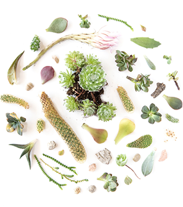

The Plant Shop is a family owned and operated nursery. Since opening our doors in 1992, we have grown hundreds of varieties for our mail order catalogue, including Sempervivum, Sedum, Jovibarba heuffelli, Rosularia, Haworthia, Kalanchoe, Senecio, Aeonium, Tender Sedum, hybrids, and more.
Since then, our collection has expanded to include over 650 different varieties of hardy and soft succulents. New varieties continue to be added to our online catalogue each month throughout the year.
We offer free shipping for most orders over $65 CAD* and ship year-round to all Canadian provinces and territories using long lasting heat packs and specialty packaging. If you are not completely satisfied with your order, we will make it right.